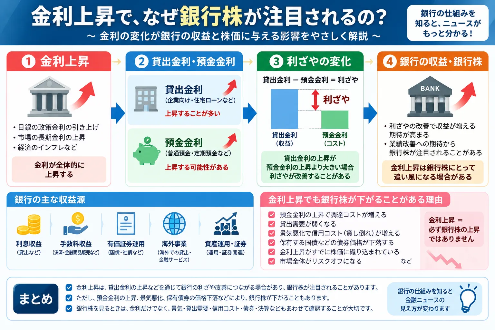

銀行株とは？なぜ金利上昇で注目されるの？初心者向けに解説
金利が上がると、なぜ銀行株がニュースになる？

金融ニュースでは、日銀の金融政策や長期金利の変化とあわせて「銀行株」が取り上げられることがあります。
金利が上昇すると銀行の収益環境が変化し、利益改善への期待から銀行株が注目される場合があるためです。
ただし、「金利上昇＝銀行の利益増加」「金利上昇＝銀行株上昇」ではありません。
銀行には貸出だけでなく、預金、債券運用、手数料、証券、決済、海外事業などさまざまな業務があります。
また、金利上昇によって預金金利などの調達コストが上昇したり、保有する債券の価格が下落したりすることもあります。
この記事では、銀行の基本的な収益構造から、金利・景気・債券市場と銀行株の関係まで初心者向けに整理します。
この記事で分かること
- 銀行株とは何か
- 銀行はどのように利益を得ているのか
- 「利ざや」とは何か
- 金利上昇で銀行株が注目される理由
- 預金金利や貸出金利との関係
- 銀行が保有する国債と金利の関係
- 景気悪化や貸し倒れが銀行収益へ与える影響
- メガバンクと地方銀行の違い
銀行株とは？
銀行株とは、銀行や銀行を中心とする金融グループを運営している企業の株式を一般的に指します。
日本の株式市場には、全国や海外へ幅広く事業を展開するメガバンクのほか、
特定の地域を主要な営業基盤とする地方銀行、銀行以外の金融事業も展開する金融グループなどが上場しています。
銀行株にもさまざまなタイプがある
- メガバンク：国内の大企業・個人向け取引に加え、海外事業や証券、資産運用など幅広い事業を展開する傾向があります。
- 地方銀行：特定地域の企業や個人への融資、預金、決済などを中心に事業を行う傾向があります。
- その他の銀行・金融グループ：ネット銀行や金融持株会社など、異なる事業モデルを持つ企業もあります。
同じ「銀行株」でも、国内貸出への依存度、海外事業の割合、証券や資産運用から得る収益などは銀行ごとに異なります。
そのため、銀行株をすべて同じ収益構造だと考えないことが大切です。
そもそも銀行はどうやって利益を出しているの？
銀行の代表的な役割の一つが、預金などで集めた資金を必要とする企業や個人へ貸し出すことです。
初心者向けに大きく単純化すると、次のような流れになります。
銀行の基本的な資金の流れ
預金などで資金を集める
↓
企業や個人への貸し出し、債券などで運用する
↓
貸出金利や運用収益などを得る
↓
預金者へ支払う金利や各種費用との差が収益につながる
ただし、現代の銀行の利益は貸出だけで決まるわけではありません。
- 企業・個人への貸出から得る利息収益
- 振込や決済、金融商品販売などによる手数料収益
- 国債など有価証券の運用
- 海外での融資や金融サービス
- 資産運用・証券関連事業
- 決済・カードなどの金融サービス
銀行によってこれらの構成比は大きく異なるため、「銀行の利益＝貸出金利だけ」ではありません。
「利ざや」とは？
銀行株のニュースでよく登場する言葉が「利ざや」です。
利ざやとは、簡略化すると、銀行がお金を運用して得る金利と、資金を集めるために支払う金利との差を指します。
初心者向けに簡略化すると
貸出などから得る金利
－
預金など資金調達にかかる金利
＝
利ざや
例えば、銀行が企業へ貸し出すことで受け取る金利が上昇する一方、
預金者へ支払う金利の上昇が比較的小さければ、金利差が拡大する可能性があります。
預金と貸出の金利差に注目する場合は「預貸金利ざや」といった言葉が使われることもあります。
ただし、実際の銀行収益には貸出以外の運用収益、手数料、信用コスト、人件費など多くの要素が関係します。
この説明は銀行の基本的な仕組みを理解するための簡略化した考え方です。
なぜ金利上昇で銀行株が注目されるの？
銀行株が金利上昇局面で注目される理由の一つが、利ざや改善への期待です。
長期間にわたって非常に低い金利環境が続くと、
銀行が貸出や運用から得られる利回りも低くなり、十分な金利差を確保しにくくなる場合があります。
一方、金利環境が変化すると次のような流れが意識されることがあります。
政策金利・市場金利が上昇
↓
貸出金利などが上昇する場合がある
↓
利ざや改善への期待
↓
銀行収益改善への期待
↓
銀行株が注目される場合がある
ここで重要なのは「場合がある」という点です。
金利が上昇しただけで、銀行の利益が必ず増えるわけではありません。
預金金利などの資金調達コスト、貸出需要、景気、信用コスト、保有債券の価格なども同時に変化します。
金利そのものの基本については、 「金利上昇とは？投資初心者にどんな影響がある？」 でも解説しています。
政策金利と銀行の貸出金利はどうつながっているの？
政策金利とは、中央銀行が金融政策を行う際に重要となる短期金利です。
日本では日本銀行の金融政策が、短期の市場金利を通じて金融機関や経済へ影響します。
政策金利や市場金利が変化すると、次のような金利へ波及することがあります。
- 企業向け貸出金利
- 住宅ローンなど個人向け貸出金利
- 普通預金・定期預金などの預金金利
- 国債などの債券利回り
ただし、政策金利が上がれば、すべての貸出金利が同じ幅・同じタイミングで上昇するわけではありません。
貸出契約が固定金利なのか変動金利なのか、貸出期間、顧客との取引関係、
市場金利の動きなどによって反映される速度や程度は異なります。
中央銀行の姿勢を表す言葉については、 「タカ派・ハト派とは？」 でも初心者向けに整理しています。
預金金利も上がるなら銀行は本当に儲かるの？
金利上昇というと「銀行が貸出から受け取る金利が増える」と考えやすいですが、
銀行が預金者へ支払う預金金利も上昇する可能性があります。
銀行にとって預金は重要な資金調達手段です。
預金金利が上昇すれば、銀行が資金を集めるためのコストも高くなります。
重要なのは金利の「高さ」だけではない
銀行収益を見るときに重要なのは、 貸出・運用から得る金利と、資金調達にかかる金利がそれぞれどの程度変化するかです。
例えば、貸出金利が比較的早く上昇し、預金金利の上昇が緩やかなら、
利ざやが拡大する可能性があります。
反対に、預金を確保するための競争が強まり預金金利が大きく上昇する一方、
貸出金利を十分に引き上げられなければ、利ざや改善が限定的になることも考えられます。
銀行ごとに預金の種類、法人・個人向け貸出の構成、固定金利・変動金利の割合などが異なるため、 金利上昇の影響も一律ではありません。
金利上昇でも銀行株が下がることがあるのはなぜ？
「銀行は金利上昇に強い」と聞くと、金利が上がれば銀行株も必ず上昇するように感じるかもしれません。
しかし、実際の株価はさまざまな材料を先回りして動いています。
- 金利上昇がすでに株価へ織り込まれている
- 預金金利などの資金調達コストが上昇する
- 高い金利によって企業や個人の貸出需要が弱くなる
- 景気悪化への懸念が強まる
- 貸し倒れなど信用コストの増加が警戒される
- 金利上昇によって保有債券の市場価格が下落する
- 海外事業や為替の変化が収益へ影響する
- 株式市場全体がリスクオフになる
つまり、銀行株を見るときに金利だけを確認すればよいわけではありません。
金利が「なぜ上がっているのか」まで確認することが重要です。
銀行が持っている国債と金利はどう関係するの？
銀行は貸出だけでなく、国債などの有価証券を保有して資金を運用することがあります。
ここで重要になるのが、債券価格と金利は一般に逆方向へ動きやすいという関係です。
市場金利が上昇
↓
新しく発行される債券の利回りが高くなる
↓
以前の低い利率で発行された債券の魅力が相対的に低下
↓
既発債券の市場価格が下落しやすくなる
このため、金利上昇は銀行が保有する債券の評価などへ影響する場合があります。
ただし、「国債価格が下落した＝その下落分がそのまま銀行の損失になる」わけではありません。
満期まで保有するのか、市場で売買するのか、会計上どのように分類されているのかなどによって、
財務諸表への影響の表れ方は異なります。
景気が悪くなると銀行株にはどんな影響がある？
銀行は企業や個人へお金を貸しているため、景気の影響を受けやすい業種でもあります。
景気が悪化すると、企業の売上や利益が減少したり、
家計の収入環境が悪化したりする可能性があります。
景気悪化
↓
企業業績や家計への負担が増える
↓
返済が難しくなる借り手が増える可能性
↓
信用コスト・貸倒関連費用が増える可能性
↓
銀行利益の重荷になる
信用コストとは？
信用コストとは、融資先の経営悪化や返済困難などに備えて銀行が計上する費用などを指します。
景気悪化によって貸し倒れへの警戒が強まると、信用コストが増加して銀行利益を圧迫する場合があります。
そのため、金利が高ければ銀行にとって常に有利とは限りません。
金利上昇と同時に景気が急速に悪化すれば、利ざや改善のプラス効果より信用コストの増加が意識される場合もあります。
メガバンクと地方銀行は何が違う？
銀行株を見るときは、「銀行」という名前だけで同じ企業と考えないことが大切です。
メガバンクと地方銀行では、営業地域や顧客、収益源などに違いがあります。
| 比較項目 | メガバンク | 地方銀行 |
|---|---|---|
| 主な営業地域 | 全国・海外にも広く展開する傾向 | 特定地域を中心とする傾向 |
| 主な顧客層 | 大企業・中小企業・個人など幅広い | 地域企業・中小企業・個人などが中心 |
| 国内貸出への依存度 | 銀行によるが、収益源を分散している場合がある | 地域の国内貸出の影響を受けやすい場合がある |
| 海外事業 | 比較的大きい場合がある | 限定的な場合が多い |
| 手数料・非金利収益 | 証券・決済・資産運用など幅広い場合がある | 地域金融を中心にサービス拡大を進める銀行もある |
| 金利変化への影響 | 国内外の金利や事業構成によって異なる | 国内金利の変化が収益へ影響しやすい場合がある |
| 地域経済との関係 | 全国・海外の景気から幅広く影響を受ける | 営業地域の人口・企業活動・景気との関係が深い |
これは一般的な傾向を整理したものであり、すべての銀行に当てはまるわけではありません。
「メガバンクだから有利」「地方銀行だから不利」と単純に比較することはできません。
銀行株は「高配当株」としても注目されるの？
銀行株の中には、配当利回りの高さから投資家に注目される銘柄もあります。
しかし、「配当利回りが高い＝安全」「将来も同じ配当が続く」という意味ではありません。
- 配当金は保証されていない
- 利益悪化などによって減配される可能性がある
- 株価が下落した結果、見かけ上の配当利回りが高くなる場合がある
- 配当だけでなく事業内容や財務状況も確認する必要がある
配当を目的とした投資については、 配当投資についての解説記事 も参考になります。
銀行株は金利上昇に強いセクターなの？
株式市場では、似た事業を行う企業をまとめて「セクター」と呼ぶことがあります。
銀行は金融セクターに分類され、一般に金利上昇局面で注目されることがある業種です。
しかし、実際の銀行株の値動きは次のような条件によって変わります。
- 金利上昇の速度
- 短期金利と長期金利の関係
- イールドカーブの形状
- 景気の強さ
- 企業や個人の貸出需要
- 信用コスト
- 保有債券の価格
- 預金金利などの調達コスト
- 市場が金利上昇をどこまで予想していたか
「金利上昇に強いセクター＝金利上昇時に必ず値上がりするセクター」ではありません。
セクターごとの特徴については
「分散投資を考えるためのセクター解説」
でも紹介しています。
複数資産へ分ける考え方については
「分散投資とは？」
も参考になります。
初心者が銀行株ニュースを見るポイント
銀行株のニュースを見るときは、金利だけではなく複数の項目を確認すると理解しやすくなります。
- 日銀など中央銀行の金融政策
- 政策金利
- 長期金利・国債利回り
- 企業・個人向けの貸出金利
- 預金金利
- 利ざや
- 貸出残高・貸出需要
- 信用コスト
- 保有債券への影響
- 銀行の決算・業績見通し
- 配当・自社株買いなど株主還元
- 市場予想へどこまで織り込まれているか
一つの数字だけを見るより、 「金利が変化した結果、銀行の収益とリスクの両方がどう変化するか」 を考えることが重要です。
インフレが金融政策へ与える影響を確認する場合は、 「CPIとは？」、 「PCEデフレーターとは？」、 「PPIとは？」 なども参考になります。
直近で銀行株が注目されている理由
2026年9月10日時点では、日本の金利環境や日本銀行の金融政策が、
銀行収益を見るうえで引き続き重要なテーマとなっています。
日本銀行は2026年7月31日の金融政策決定会合で、
次回会合までの金融市場調節方針として、
無担保コールレート（オーバーナイト物）を1.0％程度で推移するよう促す
方針を決定しました。
銀行にとっては、こうした短期金利の水準だけでなく、
長期金利、貸出金利、預金金利、債券運用利回りがどのように変化するかが重要です。
金利環境の変化によって利ざや改善への期待が高まることがある一方、
調達コストの上昇、貸出需要、保有債券の価格、景気や信用コストなども同時に確認する必要があります。
今回の金融政策から初心者が見るポイント
- 政策金利そのものの水準
- 今後の金融政策がどのような方向へ進むと市場が見ているか
- 国債利回りなど市場金利の動き
- 銀行の貸出金利がどの程度変化しているか
- 預金金利など資金調達コストがどう変化しているか
- 銀行各社の決算で利ざやや信用コストがどう説明されているか
出典：日本銀行「当面の金融政策運営について」（2026年7月31日）
※このセクションは記事公開時点の金融政策を整理したものです。金融政策は今後変更される可能性があります。
銀行株に関するよくある質問
銀行株とは何ですか？
銀行や銀行を中心とした金融グループを運営する企業の株式を一般に銀行株と呼びます。 日本ではメガバンク、地方銀行、その他の銀行・金融グループなどが上場しています。
銀行はどうやって利益を出しているのですか？
預金などで集めた資金を企業や個人への貸し出し、債券などの運用に活用し、利息収益などを得ています。 また、手数料、決済、証券、資産運用、海外事業など複数の収益源があります。
利ざやとは何ですか？
初心者向けに簡略化すると、貸出・運用から得る金利と、預金など資金調達にかかる金利との差です。 実際の銀行収益は手数料や信用コストなども関係するため、より複雑です。
なぜ金利が上がると銀行株が注目されるのですか？
貸出金利や運用利回りが上昇し、銀行の利ざやや収益が改善するとの期待が高まる場合があるためです。 ただし金利上昇が必ず銀行の利益増加につながるわけではありません。
金利が上がれば銀行株は必ず上がりますか？
必ず上がるわけではありません。 預金金利、景気、信用コスト、貸出需要、保有債券、市場予想など多くの要因が株価に影響します。
預金金利が上がると銀行の利益は減りますか？
預金金利上昇は資金調達コストを増やす要因ですが、貸出金利や運用利回りも同時に変化します。 重要なのは両方の金利がどの程度、どのタイミングで変化するかです。
金利上昇で銀行が保有する国債はどうなりますか？
一般に金利が上昇すると、既に発行されている債券の市場価格は下落しやすくなります。 ただし財務上の影響は保有目的や会計上の分類などによって異なるため、 国債価格の下落をそのまま同額の銀行損失と考えることはできません。
景気悪化は銀行株にどんな影響がありますか？
景気悪化によって企業や個人の返済能力が低下すると、 信用コストや貸倒関連費用が増えて銀行利益の重荷になる場合があります。
メガバンクと地方銀行の違いは何ですか？
メガバンクは全国や海外へ幅広く事業を展開する傾向があります。 地方銀行は特定地域の企業や個人との取引が中心になる傾向があります。 ただし実際の事業構成や収益源は銀行ごとに異なります。
まとめ｜銀行株は「金利上昇＝上昇」と単純化しない
- 銀行株は、銀行や銀行グループを運営する企業の株式です。
- 銀行には貸出金利と調達金利の差などから得られる収益があります。
- 銀行の利益には貸出だけでなく、手数料、有価証券運用、海外事業など複数の収益源があります。
- 金利上昇は、利ざや改善への期待から銀行株の材料になる場合があります。
- 一方で預金金利などの資金調達コストも上昇する可能性があります。
- 金利上昇は銀行が保有する債券価格の下落につながる場合があります。
- 景気悪化では信用コスト増加が銀行収益の重荷になる場合があります。
- メガバンクと地方銀行では営業地域や収益構造などが異なります。
- 銀行株を見るときは、金利だけでなく景気、貸出需要、信用コスト、債券、決算なども確認することが大切です。
- 「金利上昇＝銀行株上昇」と単純化しないことが重要です。
銀行株のニュースを理解するには、 金利上昇、 国債、 債券市場 の関係をあわせて確認すると、ニュースの背景を読み解きやすくなります。
一般ユーザー目線の体験でおすすめの会社をご紹介

ご利用にあたっての注意事項
本記事は情報提供を目的としており、投資の勧誘を目的としたものではありません。 株式・投資信託・外国証券等の取引は元本保証がなく、相場変動等により損失が生じる場合があります。 銀行株についても、金利、景気、企業業績、信用コスト、為替、市場環境などによって株価が変動します。 取引開始前に、契約締結前交付書面や商品説明書、目論見書等を必ずご確認のうえ、 ご自身の判断と責任でお取引ください。